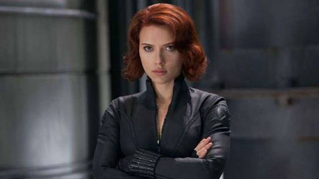

Karakter Black Widow adalah agen rahasia Russia bernama Natalia Alianovna Romanova alias Natasha Romanoff. Karakter ini ciptaan dari Stan Lee (plotter), Don Rico (scripter) dan Don Heck (artist). Penampilan pertamanya pada komik Iron Man berjudul Tales of Suspense #52 (April 1964). Ia adalah musuh dari Iron Man pada saat itu.
Dalam lima nomor ke depan, Black Widow kemudian merekrut ahli panah, Hawkeye sebagai temannya. Pemerintahnya kemudian memberikan kostum berikut alat dan persenjataan canggih. Tak berapa lama Black Widow kemudian membelot ke Amerika Serikat. Ia bergabung dengan instansi keamanan rahasia S.H.I.E.L.D dan menjadi anggota Avengers.
APenampilan Black Widow mengalami perubahan dalam komik The Amazing Spider-Man #86 (Juli 1970). Black Widow tak lagi berambut hitam, berganti menjadi berambut merah sebahu, kostumnya tetap hitam namun menjadi ketat dan memiliki gelang yang dapat melontarkan benang laba-laba.
RBlack Widow kemudian memiliki buku komik serialnya sendiri Amazing Adventures #1–8 (Aug. 1970–Sept. 1971). Dalam buku komik itu, Black Widow berbagi halaman dengan Inhumans. Sayangnya serial Black Widow hanya bertahan sampai nomor delapan. Sedangkan Inhumans sampai nomor 10.
Meskipun serialnya berakhir, namun Black Widow masih tampil dalam beberapa komik superhero. Black Widow hadir pada komik Daredevil #81 – 124 (November 1971 – Agustus 1975). Karena penulis komik Daredevil, Gerry Conway sangat menyukai karakter Black Widow, kemudian ia menyatukannya dalam serial Daredevil and the Black Widow. Sayangnya penerus Conway melihat Daredevil pantasnya hanya bekerja sendirian, kemudian Black Widow pun dihilangkan.
DMeskipun demikian Black Wdiow masih menjadi daya tarik para pembuat komik untuk tampil dalam halaman-halaman yang dibaca oleh pembelinya. Superheroine ini kemudian hadir dalam serial super team, The Champions yang bertahan hanya 17 nomor (Oktober 1975 – Januari 1978).